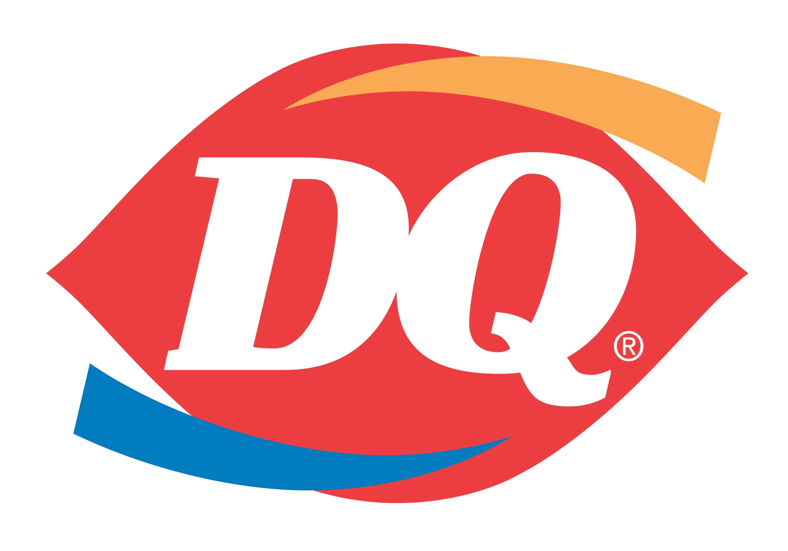

Work Experience
Junior Desk Assistant
Just Fix it
Kitchener, ON | Sep, 2019 - Jan, 2020
Assisted in diagnosing and resolving switch-related issues using PuTTY, minimizing downtime and maintaining high network reliability for clients.

Food Service Worker
Dairy Queen
Waterloo, ON | May, 2020 - Oct, 2024
Worked collaboratively with team members to ensure efficient and timely service during peak hours, resulting in improved customer satisfaction and reduced wait times.
Instructor Assistant
Wilfrid Laurier University
Waterloo, ON | Sep, 2022 - Dec, 2022
Assisted with the setup, provided hands-on support, and assisted with the troubleshooting in the computer lab sessions.